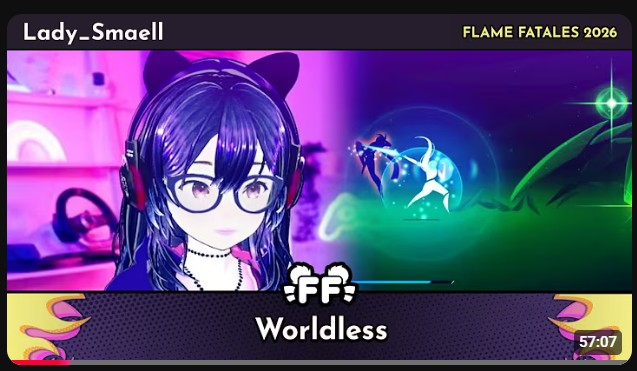

SPEEDRUNNING
Speedruns, World Records & Marathon Runs
A collection of my speedrunning adventures, personal bests, marathon appearances and current goals.
3
Active Runs
1
Potential Run
2
Marathons
Marathon History
I have participated in two speedrunning marathons so far, with future appearances and submissions planned.
Plain TextLatest Marathon Appearance

Flame Fatales 2026 - Worldless Summum%
▶ Watch RunPersonal Bests & Rankings
Loading speedruns...
Detailed personal best tracking and leaderboard achievements will be added as the page develops.
SPEEDRUNNER THOUGHTS
A series of short-form videos exploring the strange, funny and occasionally ridiculous side of speedrunning.
"Every speedrunner eventually decides that losing thirty minutes to save half a second is completely reasonable behaviour."
No One Chooses To Be A Speedrunner.
It starts with "I wonder if I can beat this game faster." The rest is history.
▶ Watch Here"One More Run" Is The Biggest Lie In Speedrunning.
It starts with one more run.
Then another.
Then suddenly it's 4am.
"Getting A PB Feels Great... For About 30 Seconds."
A casual speedrunner's take on gaming, improvement, practice, and the strange things that happen when you spend far too much time trying to save a few seconds.
▶ Watch Here